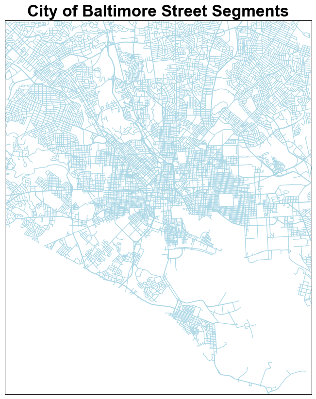
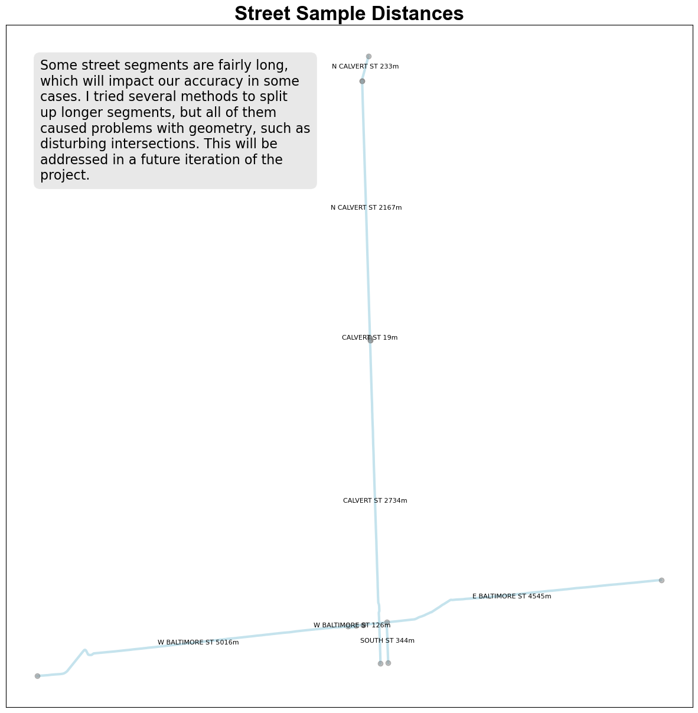
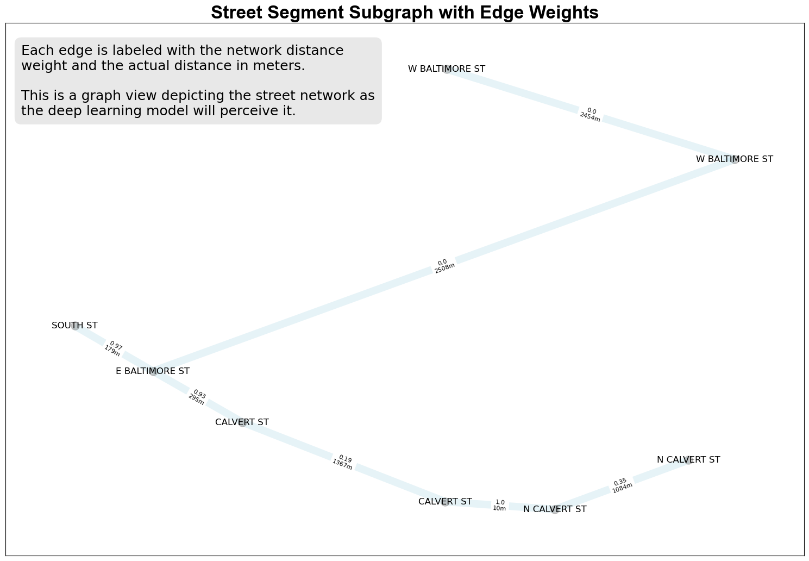
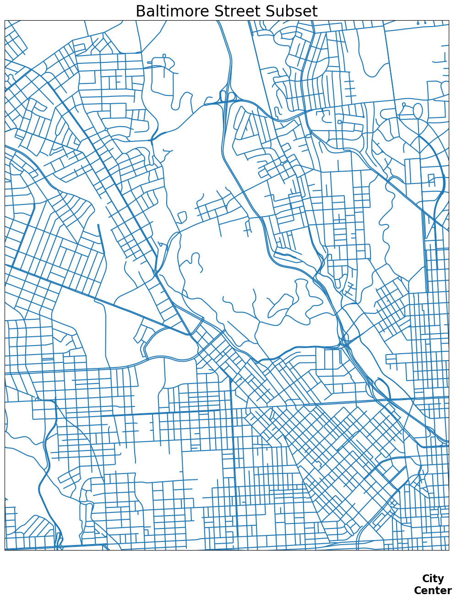

# Load geopandas, an open source code library that processes shapefile data
import geopandas as gpd
# Read the shapefile into memory. gdf stands for 'geodataframe'
streets_gdf = gpd.read_file('../../data/city_streets/MDOT_Know_Your_Roads.shp')CrimeGraph WIP: Feature Engineering the Street Graph
Introduction
In the CrimeGraph project, I will explore training a graph deep learning model to forecast the probability of crime events in the City of Baltimore, using data provided by SpotCrime. SpotCrime maintains a uniquely comprehensive database of geo-coded crime reports obtained from public safety databases and news reports from across the country. They were kind enough to grant me access to 23 years of data documenting crime events in the Baltimore.
I plan to adopt the GLDNet1 architecture described in the 2020 paper Graph Deep Learning Model for Network-based Predictive Hotspot Mapping of Sparse Spatio-Temporal Events.
Models with this design can learn from the spatial patterns of crime events by representing intersecting city streets as a graph of nodes and edges.
In this WIP2 notebook, we’ll use geographic data to prepare the street graph, as part of a process known as ‘feature engineering’. In a future notebook, we will perform feature engineering of the SpotCrime data itself.
AI Safety Caveat
Caution
Machine learning techniques frequently cause harm in law enforcement contexts due to societal biases baked into the tools and data we use to train models. I am committed to ensuring that this experiment demonstrates positive ways to improve public safety.
Here are the steps I have taken so far:
Focusing on a subgraph of streets running west-to-east across Baltimore’s core, to ensure we train the model on events in a variety of neighborhoods (important because of the extreme levels of racial segregation in the city).
Restricting the goal to forecasting only violent crimes (thus excluding property crimes). If deep learning technology can be used to reliably prevent people from becoming victims of violent crime, it may be worth the risk. This assumption would need to be tested in dialogue with affected communities before fielding it as a forecasting tool.
Using language that focuses on prevention, and not police response. The system should make forecasts that could be used to cue community crime prevention resources (such as violence interrupters).
Please let me know if you have suggestions of other risk mitigation measures.
1 Loading Street Segment Geometry
We begin by loading a GIS3 shapefile describing the geometry of Baltimore streets. The shapefile was downloaded from Maryland’s Open Data portal.
The geodataframe coordinates are specified in spherical coordinates4 (hours/minutes/seconds), which are incovenient for measuring distances between intersecting streets. Since Baltimore is a relatively small area, we can ignore the curvature of the Earth, enabling us to measure straight-line5 distances in meters.
# Convert the geodataframe to use the Maryland State Plane coordinate system,
# delineated in meters
streets_gdf = streets_gdf.to_crs(epsg=26985)# Remove unused columns from the shapefile, and rename remaining columns
# so they are easier to read
streets_gdf.drop(columns=['MUNICIPALI', 'OWNERSHIP', 'SHAPE_Leng'], inplace=True)
streets_gdf.rename(columns={'OBJECTID': 'NodeID', 'ROAD_NAME': 'Name'}, inplace=True)
streets_gdf.head()| NodeID | Name | geometry | |
|---|---|---|---|
| 0 | 367091 | HAMPNETT AV | LINESTRING Z (437097.924 186262.548 0.000, 437... |
| 1 | 367095 | RASPE AV | LINESTRING Z (439591.312 187041.316 0.000, 439... |
| 2 | 367101 | CARBORE WY | LINESTRING Z (439647.748 179306.321 0.000, 439... |
| 3 | 367108 | LAKEHURST DR (NB/L) | LINESTRING Z (431231.983 189327.930 0.000, 431... |
| 4 | 367122 | BANK ST | LINESTRING Z (440417.241 180192.691 0.000, 440... |
Note the geometry column: it contains 3D LineString segments, each made up of a series of points with 3 coordinates. The collection of LineStrings describes the path of each street segment. One street is often represented by multiple segments.
2 Restrict the Data to Streets Within City Limits
Since we are only interested in forecasting events within city limits, we should exclude streets that are maintained by the city, but which lie outside of those limits.
# 1. filter_gdf() is a custom function defined in the lib/ directory of this project
from lib.geo_utils import filter_gdf
# 2. Define city limits using spherical coordinates (degrees of latitude and longitude)
minLat, minLon = 39.19067660786725, -76.71297312947553
maxLat, maxLon = 39.37320150131267, -76.510739017176
# 3. Use the custom function to exclude streets (the function converts spherical
# coordinates to the Maryland State Plane coordinate system automatically)
streets_gdf = filter_gdf(streets_gdf, minLat=minLat, minLon=minLon, maxLat=maxLat, maxLon=maxLon)3 Plot Filtered Street Segments
This gives us a sanity check to make sure we selected the correct streets.
Code
from tkinter import font
from turtle import width
import matplotlib.pyplot as plt
fig, ax = plt.subplots(figsize=(10, 10))
streets_gdf.plot(ax=ax, color='lightblue', linewidth=1)
min_x, min_y, max_x, max_y = streets_gdf.total_bounds
ax.set_xlim(min_x, max_x)
ax.set_ylim(min_y, max_y)
plt.title('City of Baltimore Street Segments', fontsize=24, fontweight='bold', fontname='Arial')
# Remove numbers on the axes
ax.set_xticks([])
ax.set_yticks([])
plt.show()
4 Create a Sample of Streets
Since we will be constructing a graph that represents street intersections, I decided to zoom into a selection a handful of streets in the northern half of the city, to make sure the code for calculating the weights of the edges works correctly.
import re
from lib.geo_utils import filter_gdf
# match all streets that contain the following substrings
regex_pattern = r'(?:BALTIMORE ST|CALVERT ST|SOUTH ST)'
street_sample = streets_gdf[streets_gdf['Name'].str.contains(regex_pattern, na=False, regex=True)]
# We again use the filter_gdf custom function to exclude the far south extensions
# of Calvert St, which prevents the plot from getting too large
maxLat=39.374446325282264
minLon=-76.6587439176065
minLat=39.283440114622316
maxLon=-76.59163244865216
street_sample = filter_gdf(street_sample, minLat=minLat, minLon=minLon, maxLat=maxLat, maxLon=maxLon)Code
import geopandas as gpd
import matplotlib.pyplot as plt
from shapely.geometry import MultiLineString, LineString, Point
import textwrap
fig, ax = plt.subplots(figsize=(15, 15))
# Walk through each street segment in street_sample and plot it on the map
for index, row in street_sample.iterrows():
geom = row.geometry
name = row['Name']
if isinstance(geom, LineString):
line_strings = [geom]
elif isinstance(geom, MultiLineString):
line_strings = geom
for line in line_strings:
x, y = line.xy
ax.plot(x, y, color='lightblue', alpha=0.7, linewidth=3, solid_capstyle='round', zorder=2)
ax.plot(x[0], y[0], 'o', color='gray', alpha=0.5) # Segment start point
ax.plot(x[-1], y[-1], 'o', color='gray', alpha=0.5) # Segment end point
centroid = line.centroid
name = f'{name} {row["geometry"].length:.0f}m'
ax.text(centroid.x, centroid.y, name, fontsize=8, ha='center')
ax.set_title('Street Sample Distances', fontsize=24, fontweight='bold', fontname='Arial')
note = '''Some street segments are fairly long, which will impact our accuracy in some cases.
I tried several methods to split up longer segments, but all of them caused problems with geometry,
such as disturbing intersections. This will be addressed in a future iteration of the project.
'''
# remove newlines and extra spaces from note
note = re.sub(r'\s+', ' ', note).strip()
wrapped_text = textwrap.fill(note, width=40)
ax.text(0.05, 0.95, wrapped_text, transform=ax.transAxes, fontsize=16,
verticalalignment='top', wrap=True,
bbox=dict(boxstyle='round,pad=0.5', facecolor='lightgray', edgecolor='none', alpha=0.5))
ax.set_xticks([])
ax.set_yticks([])
plt.show()
5 Create a Sample Street Graph
The GLDNet architecture views the city as a graph representing street segments as nodes connected with edges. Each edge represents an intersection between street segment nodes, and each edge is described by a weight6 indicating how closely connected the streets are.
In the code below, alpha is a hyperparameter that affects the model training process. It controls the rate of decay of the edge weights as the network distance7 between two intersecting street segments increases.
A higher value of alpha will result in a slower decay rate, meaning that for higher values, the weights will decrease more slowly as the distance between two intersection streets inreases. I chose 750 as a starting point through trial and error, but we will need to do hyperparameter tuning experiments to find the most optimal value8.
# create_network_graph() is a custom function defined in the lib/ directory
from lib.graphs import create_network_graph
import re
import warnings
# there is a slight inconsistency for one intersection that we can safely ignore
warnings.filterwarnings('ignore') # there is a slight inconsistency for one intersection that we can safely ignore
# The variable G will contain the network graph of nodes and edges
G = create_network_graph(street_sample, alpha=750)Here we print some basic facts about the graph, and show a sample of what the data looks like so far:
Code
print(G)
first_few_nodes = G.nodes.data()
for node in first_few_nodes:
print(node)Graph with 8 nodes and 7 edges
(71, {'name': 'N CALVERT ST', 'position': (433234.76449570275, 184903.13711894283)})
(460, {'name': 'W BALTIMORE ST', 'position': (433035.4508496049, 180198.99369446136)})
(1094, {'name': 'E BALTIMORE ST', 'position': (435451.27511434647, 180441.2195487497)})
(1175, {'name': 'W BALTIMORE ST', 'position': (430707.4139727321, 180056.19193840865)})
(3314, {'name': 'SOUTH ST', 'position': (433572.47103290143, 180068.17071845438)})
(4740, {'name': 'N CALVERT ST', 'position': (433248.1671875986, 183714.82279332186)})
(4886, {'name': 'CALVERT ST', 'position': (433307.6642518902, 182623.34583798377)})
(4920, {'name': 'CALVERT ST', 'position': (433385.9678910779, 181250.26493673338)})6 Plot Street Sample Network Graph
Code
# custom drawing function defined in the lib/ directory
from lib.plots import plot_nodes_and_edges
from matplotlib import pyplot as plt
plt.close()
fig, ax = plt.subplots(figsize=(15,10))
plt.title("Street Segment Subgraph with Edge Weights", fontsize=24, fontweight='bold', fontname='Arial')
note = '''Each edge is labeled with the network distance weight and
the actual distance in meters.'''
note = re.sub(r'\s+', ' ', note).strip()
wrapped_text = textwrap.fill(note, width=50)
wrapped_text = wrapped_text + '\n\nThis is a graph view depicting the street network as\n' \
'the deep learning model will perceive it.'
ax.text(0.02, 0.96, wrapped_text, transform=ax.transAxes, fontsize=18,
verticalalignment='top', wrap=True,
bbox=dict(boxstyle='round,pad=0.5', facecolor='lightgray', edgecolor='none', alpha=0.5))
plot_nodes_and_edges(G, plt, fig, ax, 100)
plt.show()
The edge weights look fairly reasonable, with shorter segments having much higher weights than longer segments. You can see that where longer spans of streets intersect, the weights are much weaker, which is why in the future we’ll want to find smart ways to break up longer segments.
7 Create the Full Street Graph for Model Training
Using the entire set of streets for the city would require too much time and computational power for this experiment, so we instead focus on a broad swath of streets running west-to-east across the city’s core.
import matplotlib.pyplot as plt
from lib.geo_utils import filter_gdf, make_bounding_box
# Set the coordinates for a bounding box limiting our street segments to a strip of
# streets on either side of downtown Baltimore
minLat=39.281302796434016
minLon=-76.665
maxLat=39.299
maxLon=-76.575
# Exclude street segments outside of the bounding box
central_baltimore_subset = filter_gdf(streets_gdf, minLat=minLat, minLon=minLon, maxLat=maxLat, maxLon=maxLon)8 Plot the Full Street Graph
Just as we did with the sample, we plot the full street graph to make sure it looks reasonable.
Code
import matplotlib.pyplot as plt
from lib.geo_utils import filter_gdf, make_bounding_box
# Plot the remaining streets
fig, ax = plt.subplots(figsize=(20,15))
central_baltimore_subset.plot(ax=ax)
# Because longer streets extend past the bounding box, we use the same bounding coordinates
# to limit the borders of the plot. It's confusing if we draw parts of the street segments
# that will be excluded from training
central_baltimore_bounding_box = make_bounding_box(minLat=minLat, minLon=minLon, maxLat=maxLat, maxLon=maxLon)
min_x, min_y, max_x, max_y = central_baltimore_bounding_box.bounds
# Spherical coordinates for the center of Baltimore
latitude = 39.289444
longitude = -76.616667
center_point = Point(longitude, latitude)
center_point = gpd.GeoSeries(center_point, crs='EPSG:4326')
# Convert center_point to the Maryland State Plane coordinate system
center_point = center_point.to_crs(epsg=26985)
center_point = center_point.centroid
# Plot center_point as a red dot
ax.plot(center_point.x, center_point.y, 'o', color='red')
# write 'Center of Baltimore' below the red dot
ax.text(center_point.x, center_point.y - 100, 'City\nCenter', fontsize=16, ha='center', fontweight='bold')
ax.set_xlim(min_x, max_x)
ax.set_ylim(min_y, max_y)
plt.title('Central Baltimore Streets', fontsize=24)
ax.set_xticks([])
ax.set_yticks([])
plt.show()
The central Baltimore subset looks OK, so we proceed to create the network graph, as we did with the sample.
G = create_network_graph(central_baltimore_subset, alpha=750)
print(G)Graph with 766 nodes and 2395 edges9 Save the Graph to Disk
We persist the street graph to a file. During model training, the file will be loaded and used to represent the locations of crime events.
import json
from networkx.readwrite import json_graph
data = json_graph.node_link_data(G)
with open('../../data/processed/baltimore_street_graph.json', 'w') as f:
json.dump(data, f)
print('Graph saved to ../../data/processed/baltimore_street_graph.json')Graph saved to ../../data/processed/baltimore_street_graph.jsonUp Next
We will perform Feature Engineering for the crime events, matching each event with a node in the street graph. Stay tuned for Part 2!
Footnotes
Gated Localised Diffusion↩︎
Work-in-Progress↩︎
Geographic Information System↩︎
Known as the WGS84 coordinate reference system↩︎
Euclidean↩︎
Using an exponentially-decaying Gaussian kernel function to evaluate the similarity between two points, as described in the GLDnet paper↩︎
The distance between the center of each street, if you walked along each street↩︎
In the original GLDNet paper, the authors used a value of 5.
alphais likely sensitive to the geometry of the city being modeled.↩︎
Reuse
CC BY-NC-SA 4.0